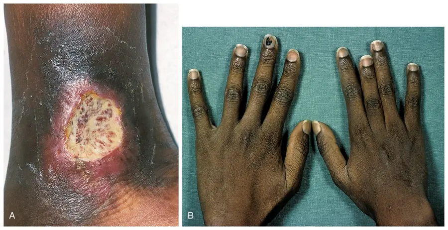

نسخه استخراجشده؛ ترجمه یا تأیید علمی انجام نشده است. وضعیت: captured
مرد ۲۸ سالهای با کمخونی داسیشکل که هیدروکسیاوره میخورد، برای کشیدن دو مولر شکسته آمده است. درد و تورم ندارد. در این جلسه حواست به چه چیزهایی باید باشد؟

در این بیماری هموگلوبین غیرطبیعی HbS ساخته میشود. وقتی اکسیژن خون کم یا pH خون پایین بیاید، HbS رسوب میکند و گلبول شکل داس میگیرد. گلبولهای سفت رگهای کوچک را میبندند و بافت بیاکسیژن میماند؛ این همان بحران داسیشکل است.
درمان روتین در دورهی بدون بحران مجاز است، ولی جلسهها کوتاه باشند و کار طولانی و پیچیده انجام نشود. جراحی انتخابی را تا جای ممکن کنار بگذار و ایمپلنت را فقط با سنجش مورد به مورد طرح کن، چون خطر عوارض استخوانی بیشتر است. عفونت دهان را فوری و کامل درمان کن: درناژ، آنتیبیوتیک با دوز درمانی، پالپکتومی یا کشیدن. اگر سلولیت ایجاد شد، با پزشک مشورت کن؛ شاید بستری لازم باشد.
اشتباه رایج: عقب انداختن درمان دندان عفونی «تا وقتی حال بیمار بهتر شود». در این بیمار خود عفونت میتواند بحران بسازد.
بدون آنزیم G6PD، گلبول قرمز در برابر استرس اکسیداتیو بیدفاع است: متهموگلوبین و Hb تخریبشده ساخته میشود و گلبول همولیز میشود.
اگر بیمار G6PD دچار متهموگلوبینمی شود، متیلن بلو خودش ممکن است همولیز بدهد. سابقهی G6PD را بالای پرونده بنویس.